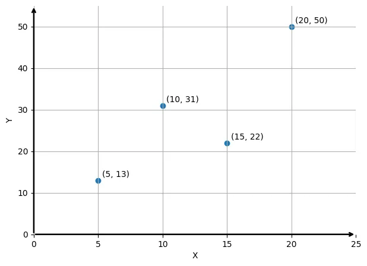
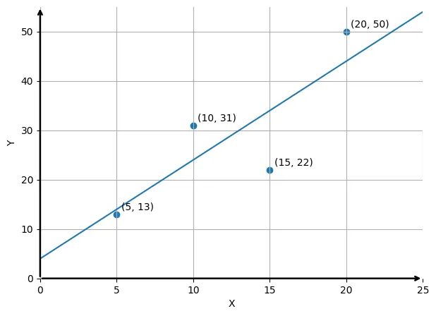
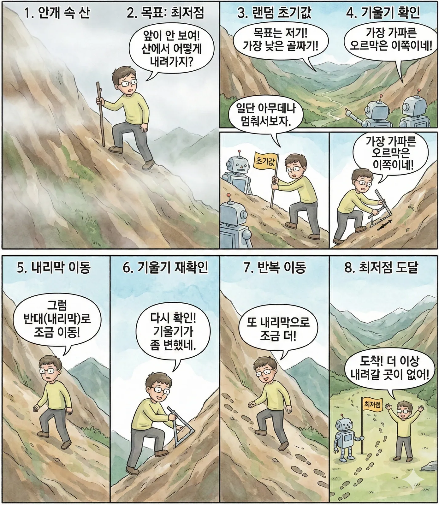

예측이 실제 정답에서 멀리 떨어져 있다는 뜻입니다.
Part 1 · Machine Learning
오차와 경사하강법
컴퓨터는 틀린 정도를 숫자로 재고, 그 숫자가 작아지는 방향으로 조금씩 움직이며 정답에 가까워집니다.
Error Function · S18
틀린 정도를 숫자로 바꾸기
오차함수는 ‘예측’이 실제 ‘정답’과 얼마나 차이가 나는지를 나타내는 함수입니다.
오차 = 예측값 − 실제값
예측이 실제 정답에 가까워졌다는 뜻입니다.

Why Squared Error? · S19
오차를 그냥 더하면 0이 된다
양수 오차와 음수 오차가 서로 지워지면, 분명히 틀린 예측인데도 오차의 합계가 0이 되는 경우가 많습니다.
| x | 5 | 10 | 15 | 20 | 합계 |
|---|---|---|---|---|---|
| y | 13 | 31 | 22 | 50 | 116 |
| 예측 | 14 | 24 | 34 | 44 | 116 |
| 오차 | 1 | −7 | 12 | −6 | 0 |
| 절댓값 | 1 | 7 | 12 | 6 | 26 |
| 제곱 | 1 | 49 | 144 | 36 | 230 |
부호가 반대인 오차끼리 상쇄되어 틀린 정도를 숨깁니다.
큰 오차를 더 크게 드러내어 값의 차이를 극명하게 보여 줍니다.
제곱 오차의 합 230을 데이터 4개의 개수로 나눈 MSE입니다.
절댓값보다 제곱을 사용하면 값의 차이가 더욱 극명하게 보입니다. 그래서 오차의 크기를 최소화할 때 평균 제곱 오차(MSE)를 주로 사용합니다.
See the Gap
점과 예측선 사이가 오차다

Interactive · Widget 09
오차가 바뀌는 순간 직접 보기
Gradient Descent · S20
눈을 가리고 산에서 내려오기
목표는 산에서 가장 낮은 골짜기, 즉 최저점을 찾는 것입니다. 전체 지도는 볼 수 없고 딱 ‘내 발 밑의 경사’만 알 수 있습니다.
앞이 안 보이는 등산가
가장 가파른 오르막을 확인한 뒤 그 반대인 내리막 방향으로 조금씩 움직입니다.
- 일단 아무 데나 멈춰 섭니다. 이것이 랜덤한 초기값입니다.
- 내 발 밑에서 가장 가파른 길이 어느 방향인지 확인합니다.
- 그 반대인 내리막길 방향으로 조금 이동합니다.
- 기울기를 다시 확인하고, 더 내려갈 곳이 없을 때까지 이동을 반복합니다.

Interactive · Widget 10
보폭이 너무 크면 어떻게 될까?
Quick Check
핵심 개념 확인
평균 제곱 오차에서 오차를 제곱하는 가장 중요한 이유는 무엇일까요?
답을 고르면 바로 해설이 나타납니다.
눈을 가린 등산가가 다음 한 걸음을 정할 때 사용할 수 있는 정보는 무엇일까요?
답을 고르면 바로 해설이 나타납니다.